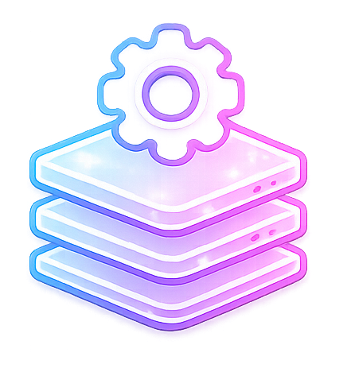
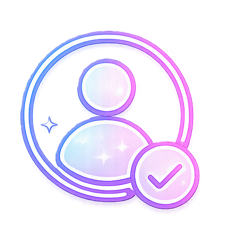
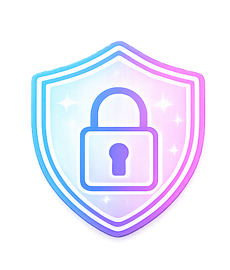
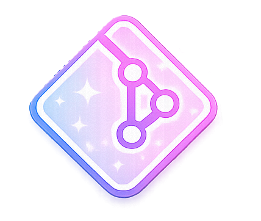

01
Current Project
In ProgressCloud Infrastructure Portfolio
A professional portfolio built from scratch using HTML, CSS, JavaScript, Git, GitHub, and GitHub Pages.
Systems Engineer
I'm Darling Jackson, a Systems Engineer with experience supporting enterprise and DoD environments. My focus is cloud infrastructure, identity and access management, security, and platform engineering.

Engineering Portfolio
A focused collection of hands-on projects that document my growth in cloud infrastructure, platform engineering, identity and access management, automation, and enterprise security compliance.
Current Project
In ProgressA professional portfolio built from scratch using HTML, CSS, JavaScript, Git, GitHub, and GitHub Pages.
Cloud Lab
PlannedA planned AWS infrastructure lab focused on VPCs, EC2, IAM, security groups, S3, CloudWatch, and cloud security fundamentals.
Platform Lab
PlannedA planned platform engineering lab focused on Docker, Kubernetes, deployments, services, YAML, and containerized applications.
IAM Lab
PlannedA planned IAM lab focused on users, groups, roles, MFA, authentication, authorization, and SSO concepts.
Infrastructure as Code
PlannedA planned infrastructure-as-code project focused on provisioning cloud resources using Terraform, variables, modules, and GitHub.
Security Compliance
PlannedA planned security lab focused on RMF, NIST controls, STIGs, POA&M tracking, vulnerability management, and ATO documentation concepts.
Certification Roadmap
A focused certification path supporting my growth in cloud infrastructure, Linux, security, automation, and platform engineering.
Complete
Security fundamentals, risk management, identity, and secure operations.
Complete
Cloud concepts, Azure services, governance, and cloud security basics.
Current Focus
AWS core services, IAM, billing, support, and shared responsibility.
Planned
Linux administration, command line, permissions, services, and networking.
Planned
Infrastructure as Code, providers, variables, state, modules, and automation.
Planned
Containers, Kubernetes architecture, deployments, services, and operations.
Certification Roadmap
A focused certification path supporting my growth in cloud infrastructure, Linux, security, automation, and platform engineering.
Complete
Security fundamentals, risk management, identity, and secure operations.
Complete
Cloud concepts, Azure services, governance, and cloud security basics.
Current Focus
AWS core services, IAM, billing, support, and shared responsibility.
Planned
Linux administration, command line, permissions, services, and networking.
Planned
Infrastructure as Code, providers, variables, state, modules, and automation.
Planned
Containers, Kubernetes architecture, deployments, services, and operations.
Core Skill Areas
My engineering experience and continuous learning are focused on six core disciplines that support secure, scalable, and reliable enterprise environments.
Designing, deploying, and supporting cloud environments with a focus on scalability, networking, monitoring, and security.

Building modern infrastructure using containers, Kubernetes, automation, and cloud-native technologies.

Managing authentication, authorization, RBAC, SSO, MFA, and secure identity solutions.

Supporting secure enterprise environments through RMF, STIGs, compliance, vulnerability management, and security best practices.

Using Git, GitHub, Infrastructure as Code, and automation tools to improve consistency and deployment workflows.
Constantly expanding my knowledge through certifications, engineering labs, documentation, and real-world projects.
Open to Opportunities
I am open to Systems Engineer, Cloud Infrastructure, IAM, Security, and Platform Engineering opportunities.